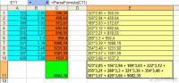

|
 Пользовательская функция ParseFormula предназначена для отображения промежуточных результатов вычисления простейших формул в Excel.
В данной версии функции ParseFormula поддерживаются только 2 формулы: СУММ и ПРОИЗВЕД Пример её использования - в прикреплённом файле. В примере в голубых ячейках - исходные данные для формул,
Функция анализирует диапазоны, заданные в качестве параметров этих формул, и возвращает результат промежуточных вычислений в виде 123*2,85 + 156*2,94 + 189*3,03 + 222*3,12 + 255*3,21 + 288*3,3 + 321*3,39 + 354*3,48 + 387*3,57 + 420*3,66 = 9082,35
Для использования функции добавьте в стандартный модуль вашего файла (или любой подключенной надстройки) следующий код: Option Compare Text
Function ParseFormula(ByRef cell As Range, Optional SubItem As Boolean = False) On Error Resume Next fo = cell.Formula: fu = Split(Split(fo, "=")(1), "(")(0) Dim cel As Range, ra As Range: Set ra = Range(Split(Split(fo, "(")(1), ")")(0))
Select Case fu Case "PRODUCT": s = "*" Case "SUM": s = " + " Case Else: s = " ??? ": fu = "" End Select If fu = "" Then ParseFormula = cell.Value: Exit Function
For Each cel In ra.Cells ParseFormula = ParseFormula & s & IIf(fu = "", cel.Value, ParseFormula(cel, True)) Next cel ParseFormula = Mid(ParseFormula, Len(s) + 1) If Not SubItem Then ParseFormula = "" & ParseFormula & " = " & cell.Value End Function После добавления кода поместите в нужную ячейку формулу вида =ParseFormula(a1) Результат работы функции можно использовать и из кода VBA: Sub ПримерИспользованияParseFormula() ' выводим промежуточные результаты вычисления для формулы из активной ячейки РезультатВычислений = ParseFormula(ActiveCell) Debug.Print РезультатВычислений End Sub
|